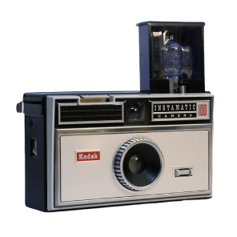

Masa Depan Fotografi
1990
Steven Sasson

Kamera digital telah merevolusi industri fotografi, mengubah cara kita mengambil, menyimpan, dan berbagi gambar.
Kamera digital pertama kali dikembangkan pada tahun 1970-an, tetapi kamera digital praktis pertama yang tersedia untuk umum baru muncul pada awal 1990-an.
Pada tahun 1975, seorang insinyur bernama Steven Sasson di Eastman Kodak menciptakan kamera digital pertama yang menggunakan sensor CCD (Charge-Coupled Device) untuk merekam gambar digital. Meskipun kamera ini memiliki resolusi rendah dan membutuhkan waktu untuk menyimpan gambar.
Penemuan kamera digital telah mengubah lanskap fotografi secara fundamental. Dengan memungkinkan pengguna untuk melihat hasil foto secara instan, menyimpan gambar dalam format digital, dan berbagi gambar melalui internet, kamera digital telah membuat fotografi lebih mudah diakses oleh orang-orang dari berbagai latar belakang